|
PROLOGY DVS-1130 - Мультимедийный центр со встроенным DVD-проигрывателем и ЖК монитором
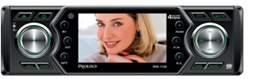 Мультимедийный центр стандартного монтажного размера 1DIN имеет ЖК-монитор размером 3" (76 мм) и системы цветности PAL/SECAM/NTSC. Центр совместим с форматами DVD, MPEG4, VCD, CD, MP3, WMA, JPEG, оснащен слотом для карт памяти SD/MMC и интерфейсом USB. Встроенный высокоскоростной PLL тюнер с системой RDS-EON и памятью на 24 радиостанции (18 FM, 6 УКВ). |
||
|
PROLOGY DVS-1135 - Мультимедийный центр со встроенным DVD-проигрывателем и ЖК монитором
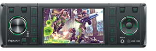 Автомобильный мультимедийный центр с мультисистемным (PAL/NTSC) ЖК-монитором 3,5” (89 мм), DVD/MPEG4/VCD/CD/MP3/WMA/JPEG проигрывателем, cлотом для карт памяти SD/MMC, системой RDS-EON, памятью на 24 радиостанции и вынесенным интерфейсом USB. |
||
|
PROLOGY DVS-1230 - Мультимедийный центр со встроенным DVD-проигрывателем и ЖК монитором
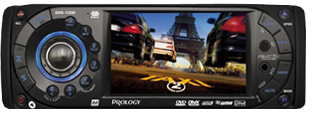 Автомобильный мультимедийный центр со встроенным в лицевую панель ЖК-монитором размером 3.5” (88 mm). Центр, совместимый с форматами DVD, MPEG4, DivX, VCD, CD, MP3, WMA, JPEG, имеет системы цветности PAL/NTSC и высокую выходную мощность (4 x 55 Вт). Среди современных возможностей центра необходимо отметить функцию 2-х зонного воспроизведения, слот для карт памяти SD/MMC и возможность подключения плеера iPod. Кроме этого, мультимедийный центр имеет полностью съемную моторизованную переднюю панель, что надежно защитит его от кражи. |
|
Переносной ЖК телевизор PROLOGY HDTV-810XSC Black
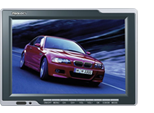 Цветной мультисистемный широкоформатный переносной телевизор с LCD ЖК- экраном размером 8” (203 мм) c памятью на 256 телепрограмм, слотом для карт памяти SD/MMC и поддержкой карт памяти с интерфейсом USB. Телевизор имеет функцию переворота и зеркального разворота изображения, что незаменимо при подключении камеры заднего обзора. ... |
||
|
Переносной ЖК телевизор PROLOGY HDTV-850WNS Black
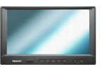 Цветной переносной мультисистемный телевизор с LCD ЖК-экраном размером 215 мм (8,5") с памятью на 256 телепрограмм. Телевизор имеет пульт ДУ, функцию переворота и зеркального разворота изображения и встроенный динамик. Отличительной особенностью всех телевизоров Prology серии WNS является янтарная подсветка кнопок передней ппанели с автоматическим отключением, что делает управление телевизором в темноте еще более удобным. |
||
|
Переносной ЖК телевизор PROLOGY HDTV-900WNS Black
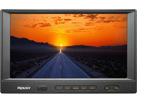 Мультисистемный цветной телевизор оснащен современной ЖК матрицей Panasonic размером 228 мм (9") с высоким разрешением, памятью на 256 телепрограмм, русскоязычным экранным меню и пультом ДУ. Отличительной особенностью всех телевизоров Prology серии WNS является янтарная подсветка кнопок передней ппанели с автоматическим отключением, что делает управление телевизором в темноте еще более удобным. |
|
CD/MP3 ресивер PROLOGY CMD-150
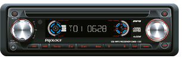 Полностью съемная передняя панель с футляром(4x50 Вт) |
||
|
CD/MP3 ресивер PROLOGY CMD-115U
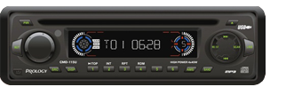 FM/УКВ CD/MP3 - ресивер стандартного монтажного размера 1DIN с полностью съемной передней панелью с футляром и высокой выходной мощностью (4x45 Вт). Ресивер имеет поддержку карт памяти с интерфейсом USB, а также FM/УКВ приемник с памятью на 24 станции. Среди прочих возможностей следует отметить электронную регулировку параметров при помощи энкодера, четыре предустановленные характеристики эквалайзера, а также возможность дистанционного управления. |
||
|
CD/MP3/WMA ресивер PROLOGY MCE-550R
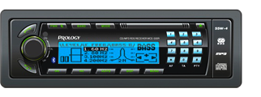 FM/УКВ RDS CD/MP3/WMA ресивер с поддержкой беспроводной технологии Bluetooth® для управления мобильным телефоном, системой RDS-EON, высокоскоростным цифровым тюнером с памятью на 18 радиостанций, матричным ЖК-дисплеем и высокой выходной мощностью (4 x 55 Вт) |
|
Автомобильный усилитель мощности CLUB CA – 400
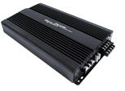 Автомобильный 4/3/2-канальный усилитель с высокой выходной мощностью с электронным кроссовером с плавной регулировкой частоты среза. Позолоченные входные, выходные разъёмы а также разъемы питания. |
||
|
Автомобильный усилитель мощности AV-470
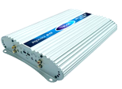 Автомобильный 4/3/2-канальный усилитель с высокой выходной мощностью с электронным кроссовером с плавной регулировкой частоты среза. Позолоченные входные, выходные разъёмы а также разъемы питания. Стабильная работа при нагрузке 2 Ом, возможность подключения по мостовой схеме на 4 Ом. Защита от перегрева и короткого замыкания. |
||
|
Автомобильный усилитель мощности Control – 4404
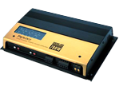 Автомобильный 4/3/2-канальный усилитель с высокой выходной мощностью, электронным кроссовером с плавной регулировкой частоты среза. Стабильная работа при нагрузке 2 Ом, возможность подключения по мостовой схеме на 4 Ом. Защита от перегрева и короткого замыкания.Усилитель комплектуется колбой с предохранителем. |
|
Активный сабвуфер PROLOGY AT-1000
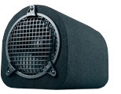 10" (25 см) активный автомобильный сабвуфер в корпусе с фазоинвертором |
||
|
Активный сабвуфер PROLOGY ATB-1000
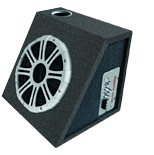 Размер диффузора: 25.4см (10”) |
||
|
Активный сабвуфер PROLOGY ATM-1000
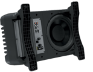 Автомобильный 4/3/2-канальный усилитель с высокой выходной мощностью, электронным кроссовером с плавной регулировкой частоты среза. Стабильная работа при нагрузке 2 Ом, возможность подключения по мостовой схеме на 4 Ом. Защита от перегрева и короткого замыкания.Усилитель комплектуется колбой с предохранителем. |